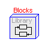
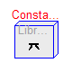
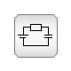
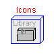
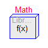
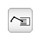
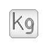
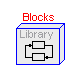
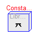
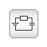
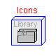
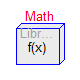
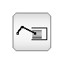
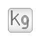

Package Modelica is a standardized and pre-defined package that is developed together with the Modelica language from the Modelica Association, see http://www.Modelica.org. It is also called Modelica Standard Library. It provides constants, types, connectors, partial models and model components in various disciplines.
For an introduction, have especially a look at:
The Modelica package consists currently of the following subpackages
Constants Mathematical and physical constants (pi, eps, h, ...)
Icons Icon definitions of general interest
Math Mathematical functions (such as sin, cos)
SIunits SI-unit type definitions (such as Voltage, Torque)
Blocks Input/output blocks.
Electrical Electric and electronic components.
Mechanics Mechanical components
(currently: 1D-rotational and 1D-translational components)
Thermal Thermal components
(currently: 1-D heat transfer with lumped elements)
Copyright © 1998-2004, Modelica Association.
The Modelica package is free software; it can be redistributed and/or modified under the terms of the Modelica license, see the license conditions and the accompanying disclaimer here.
| Name | Description |
|---|---|
| UsersGuide | Users Guide |
| Blocks | Library for basic input/output control blocks |
| Constants | Mathematical constants and constants of nature |
| Electrical | Library for electrical models |
| Icons | Icon definitions |
| Math | Mathematical functions |
| Mechanics | Library for mechanical systems |
| SIunits | Type definitions based on SI units according to ISO 31-1992 |
| Thermal | Components for thermal systems |